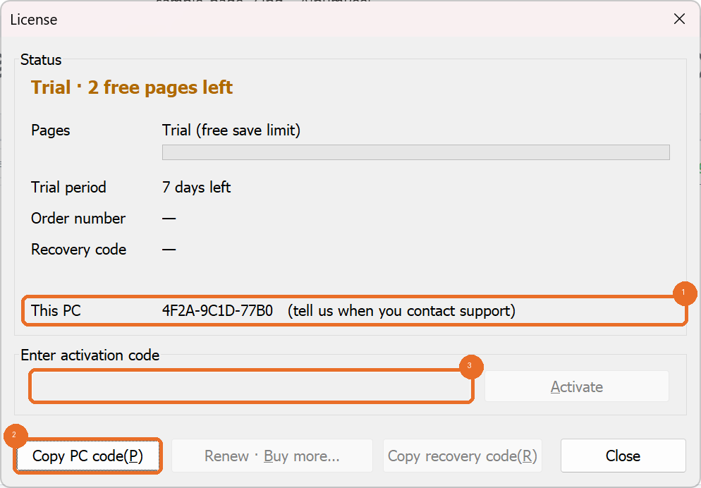

Trial, license, buying and activating, terms of use
| Amount | 1,000 pages of saving. One saved scan = 1 page; saving the same scan again costs nothing. That is 1,000 A4 album pages, enough for 10 to 20 albums or more (depends on the albums). |
|---|---|
| Price | 29.5 USD (paid by PayPal) |
| Term | No time limit. When all 1,000 pages are used, saving stops (detecting and editing still work); a new license is needed to save again. A new license replaces the old one and is not added to the remaining pages. |
| PC | One PC only. The activation code works only on the PC whose code was sent, and the PC cannot be changed. |
| Reinstalling | Reinstalling Windows or the program, or changing the disk, on the same PC is fine: enter the same activation code again and the used pages carry over. Please ask before replacing the motherboard. |
| PC failure | Only if the PC has failed and cannot be used, one recovery per license moves the remaining pages to a new PC (order number, new PC code and recovery code needed). Write the recovery code down away from the PC right after activation. |

Page counts, codes and dates in the picture are example values.
Neither photos nor usage data are sent anywhere. Activation and the page count are handled entirely on your PC.
Refund conditions and the terms are in Terms of Use · License Agreement [draft — final after legal review].